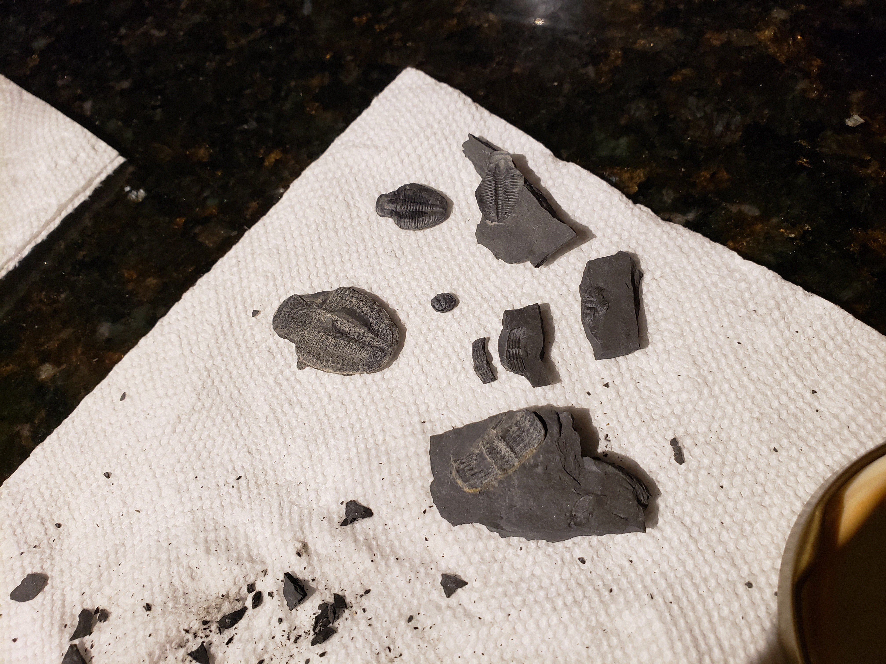
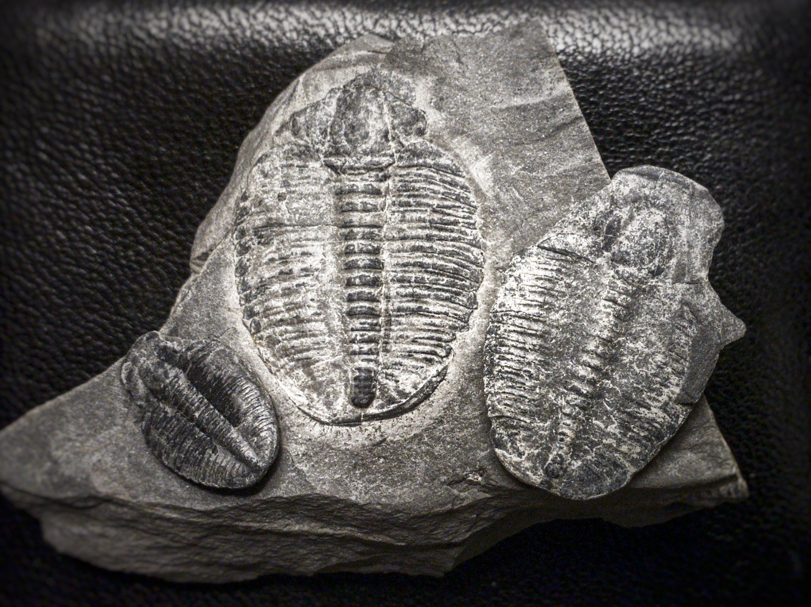

About a year ago a friend of mine gave me a piece of shale with a trilobite fossil on the surface.
He had collected quite a few such pieces from somewhere in Utah where, he tells me, he could pay a flat fee and dig up as many trilobites as he wanted. I was curious to see whether there were any other fossils inside the slab of shale he gave me. Trilobites were once so common that their remains are used as “index fossils,” which is to say that they’re used to identify how old the rock they are embedded in is. Because so many of them would be preserved, different trilobite species are plentiful and thus can be used to judge what geologic era a rock layer, and the other fossils embedded in it, is from.
Without knowing much of anything about the proper way to extract trilobite fossils, I instead chose to experiment on my own. The first step in my process was to soak the shale in water for hours or days, since shale is very porous and the absorption of water would probably make it easier to break the layers apart. After removing the pieces of shale from the water and putting them on a paper towel, I immediately set to work trying to pry them apart using my fingers. I searched for cracks or small pieces jutting out to get the leverage to do so. I also tried using a butterknife to separate the layers, but found that the soft shale tended to merely crumble under the hard metal. I am sure real paleontologists have much more suitable tools for the task, but I chose the caveman method instead.
Despite my crude methods, I was quite lucky because of a property of fossils, which is that they are often harder than the rock they are embedded in. This is especially the case for shale! As a result, despite applying enough force to break apart the shale, the fossils therein typically remained intact; in fact the shale typically cleaved around the fossils, which presumably created a weak point in the rock. This way I was able to uncover several small, unidentifiable fossils, but more importantly, I freed three trilobites! These fossils aren’t in the best condition, both because they simply aren’t perfect fossils, and perhaps also because of the brute-force method I used to remove them. For example, these trilobites appear to be missing part of the rounded ‘shield’ that trilobites had (specifically, the “librigena,” which often separated when the trilobites died). Still, I am quite satisfied with having extracted fossils that I can hold in my hand, and several specimens of different size at that. Not knowing where the shale they came from is located, nor the species that they are, I can’t tell you how old they are; they could be anywhere from 252 million to 521 million years old. Trilobites were around for almost 300 millions years; despite being long gone and forgotten today, they were among the most successful animals in Earth’s history.
Because of their abundance, trilobites typically aren’t worth very much. Certainly in the condition of mine they aren’t worth much more than a few dollars. Yet these fossils hold more value than that to me, because it never fails to blow my mind that a fossils I can hold in my hands is not merely a species, but a specific, individual animal that once lived in the present just as we do now. Once dominant and everywhere, now extinct and buried, these animals remind us of the true breadth of paleologic time.